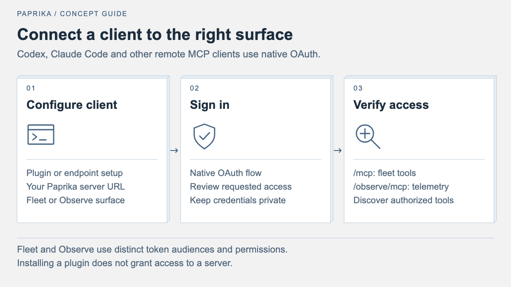

Use the Paprika fleet plugin
Install the Paprika plugin for Codex or Claude, inspect fleet and application state, and understand permissions for delivery actions.
Use the Paprika plugin to inspect application health, investigate failed
deployments, read workload logs, and request delivery actions from your coding
agent. The package includes operational skills and a remote MCP connection to
https://paprika.benebsworth.com/mcp. You need a Paprika login with access to the
projects you want to inspect. No local Kubernetes credentials or server build
are needed to use the hosted connection.


Install the plugin
Get a checkout containing the plugin and its marketplace catalogs. If you already have the repository, run the installation commands from its root.
git clone https://github.com/paprikacd/paprika.git
cd paprika
The marketplace is named paprika, and the plugin is named paprika, so its
installation identifier is paprika@paprika. Keep a local checkout in a
permanent location while using it as a marketplace source.
Creating or cloning the marketplace catalogs does not register the marketplace with Codex or Claude, or install the plugin. Run the commands for your client below before looking for Paprika in its plugin list.
Codex
From the repository root:
codex plugin marketplace add .
codex plugin add paprika@paprika
codex plugin marketplace list
codex plugin list
Verify that the marketplace list includes paprika and the plugin list includes
paprika@paprika as installed and enabled. In the desktop app, refresh Plugins
if its list has not updated, then start a new Codex chat.
Complete the bundled Paprika connection's OAuth sign-in when prompted. Use the
client's connection controls to sign in; do not paste a bearer token into chat.
Installation enables the skills and connection. A sidebar App also requires
the deployed server's console entrypoint; see
Paprika missing from the Codex sidebar.
If your Codex version has no plugin command, use the endpoint-only setup below
or update the client. See OpenAI's plugin packaging and local marketplace
guide for client details.
Claude Code
From the repository root:
claude plugin marketplace add .
claude plugin install paprika@paprika --scope user
claude
In the new Claude Code session, run /mcp, select the Paprika connection, and
authenticate in the browser. The bundled server is called paprika_hosted;
the client may display it with a plugin prefix. You can ask for Paprika in
ordinary language or invoke /paprika:paprika for the operational skill and
/paprika:paprika-setup for connection help.
For a temporary development session, load the package directly instead:
claude --plugin-dir ./plugins/paprika
Use the marketplace installation for normal use and --plugin-dir when
checking local edits. See Claude Code's plugin
guide and MCP authentication
guide.
Endpoint-only setup and other MCP clients
If you only want the tools, connect the remote server directly. This does not install the packaged skills. Use one Paprika connection per client; disable a duplicate direct connection when switching to the full plugin.
For Codex:
codex mcp add paprika_hosted --url https://paprika.benebsworth.com/mcp
codex mcp login paprika_hosted --scopes paprika:read
For Claude Code:
claude mcp add --transport http --scope user paprika_hosted https://paprika.benebsworth.com/mcp
claude
Then use /mcp in Claude Code to authenticate. In other MCP clients, add the
same HTTPS URL as a Streamable HTTP server and use the client's native OAuth
flow. Interactive panels and the application mention picker require host
support; ordinary read and write tools work without those UI features.
For your own Paprika instance, replace the URL in both
plugins/paprika/mcp.json and plugins/paprika/.mcp.json before installing, or
use your instance's URL in the endpoint-only commands. The server needs MCP
and OAuth enabled; see the deployment section below and the
authentication guide.
Sign in and verify access
Inspection requires paprika:read. Delivery actions also require
paprika:write and your existing Paprika RBAC permissions. Review the scopes
in native OAuth consent; reconnect through the client when you need to change
access. For an endpoint-only Codex connection that needs both scopes, use:
codex mcp login paprika_hosted --scopes paprika:read,paprika:write
After approving access in Paprika, the capsicum screen shows add some spice, the account, deployment hostname, and granted access. Choose Continue to application to return to the client's validated callback and finish connecting. “Access approved” confirms the Paprika approval; the client confirms the final connection after exchanging the authorization code. The final localhost callback page is owned by Codex or Claude and cannot be styled by the Paprika server.
After sign-in, start with:
Use Paprika to show fleet status and applications that need attention. Include each app's namespace, reported health, and out-of-sync count.
The agent should discover the server's tools, call fleet_status, and use
list_applications as needed. Check that the returned projects and namespaces
match your access. If no applications are visible, confirm the selected
account and project permissions before treating the fleet as empty.
The installed package and the deployed server have separate versions. The
fleet panel and composite health report require the server to expose
open_fleet and get_application_health; discover those tools before using
them. Earlier deployments can still provide the existing read tools.
Use Paprika
Include the namespace and application name in requests for one application.
These are example prompts; replace production/checkout with your app.
| Task | Prompt |
|---|---|
| Fleet overview | "Show Paprika fleet health and any drifted or unhealthy apps." |
| App health | "Check production/checkout. Explain health, drift, failed checks, and the current release." |
| Deployment failure | "Investigate the latest failed release for production/checkout. Show the failing resources and supporting evidence." |
| Resource logs | "Inspect the resource tree for production/checkout, then fetch the last 200 log lines for the failing workload." |
| Interactive console | "Open the Paprika fleet console for the production namespace." |
| Requested sync | "Sync production/checkout with its configured source, then check progress and report remaining gates or failures." |
In a host that renders MCP Apps, the console offers Health, Resources, Deployments, and Debug views. Filter the fleet by namespace or search, select an app, and inspect conditions, checks, release failures, and resource readiness. Run an investigation or open logs when you need additional evidence. Use Attach to chat to add the selected app's context to the conversation. Request sync sends an action request to chat; completion is established by subsequent health and deployment checks.
A reported Healthy app can still have drift or an exhausted release retry
budget. Keep those signals separate. Unknown, unavailable or stale evidence,
and empty investigation findings do not establish health. Logs load on demand,
and app health is reported by the controller rather than inferred from a
successful MCP call.
Troubleshoot the connection
| Symptom | What to check |
|---|---|
| Plugin or marketplace not found | Catalog files alone do not register or install anything. Run the install commands from the repository root. For Codex, check codex plugin marketplace list for paprika and codex plugin list for paprika@paprika, then refresh Plugins and open a new chat. |
| Plugin installed but tools are missing | Start a new chat, confirm the plugin and bundled server are enabled, and complete OAuth. In Claude Code, inspect /mcp. |
| Plugin installed but missing from Codex Sidebar / Apps | Follow the sidebar checks below. The server must advertise the console's global entrypoint before Codex can offer it in Explore. |
| Sign-in fails or returns 401 | Reconnect through native OAuth to the exact /mcp URL. If it persists, ask the server operator to check public URL, discovery, and redirect configuration. |
| Reads or actions are denied | Check the granted read/write scopes and Paprika project RBAC. Write access does not imply read access. |
| Console or new health tool is unavailable | Check deployed tool discovery and host MCP Apps/Extensions support. Installing the package does not upgrade the server. |
| Some evidence is missing | Inspect section errors, status.partial, timestamps, and truncation markers. Use targeted resource reads and logs for the available evidence. |
| Tools appear twice | Keep either the plugin's connection or the direct MCP entry enabled. |
Paprika missing from the Codex sidebar
- Check
codex plugin listforpaprika@paprikaas installed and enabled, and complete native OAuth for the Paprika connection. This verifies the package and connection; it does not create a sidebar App by itself. - Ask Codex: "Discover the tools on my Paprika connection. Is
open_fleetavailable?" The deployed API server must exposeopen_fleetwith a global MCP App entrypoint. If it is missing, the Paprika operator needs to upgrade the API server. Reinstalling the plugin package does not deploy that upgrade. - After the server upgrade, open a new chat and verify tool discovery again. If Codex still lists the earlier tools, open Plugins, switch the Paprika plugin off and back on, then start a new chat. This reloads the local plugin configuration without removing its saved OAuth sign-in. The Codex client must support MCP Apps and Extensions to offer the sidebar entry.
- Once Codex discovers the entrypoint, open Explore → Paprika, then choose Pin to sidebar to keep it in the navigation rail. Discovered Apps are not pinned automatically.
For an existing sidebar App, its Refresh action reloads the console UI and restarts the widget. It does not add tools that the server has not deployed.
After updating the plugin source, refresh or reinstall it through the client's
plugin manager and start a new session. For Claude Code's marketplace install,
use claude plugin marketplace update paprika, then
claude plugin update paprika@paprika. For Codex, refresh the marketplace and
reinstall or update Paprika from Plugins. Server tools and the console bundle
are updated by the Paprika operator's normal API-server deployment workflow.
Package and authentication
plugins/paprika/plugin.json is the portable Agent Plugins 1.0 manifest.
mcp.json points to https://paprika.benebsworth.com/mcp using Streamable HTTP.
Compatibility manifests and .mcp.json preserve Codex/Claude clients using the
earlier package layout. Identity, branding, and default prompt order stay
consistent across the package's presentation metadata.
Connect through the client's native OAuth flow. Paprika supports OAuth 2.1 with
PKCE, discovery, and dynamic client registration. Inspection requires
paprika:read; writes require paprika:write and the existing RBAC permissions.
The scopes are independent. The package contains no credentials or auth headers.
The optional paprika-setup skill verifies access with fleet_status after login.
Observability gateway
Install Paprika Observe through the plugin
Node.js 20+ can install the complete Codex or Claude Code plugin from the GitHub repository without a manual clone:
npx --yes --package=github:paprikacd/paprika -- paprika-plugins install observe --client codex
npx --yes --package=github:paprikacd/paprika -- paprika-plugins install observe --client claude
The npx distribution bundles the marketplace, plugin manifests, MCP URL and
Observe skill. It stages a managed marketplace under
~/.paprika/plugin-marketplace, uses the selected client's plugin commands,
and then asks the user to finish native OAuth. It does not create a duplicate
direct MCP entry or capture credentials. Rerun the command to refresh the
staged marketplace, then restart or refresh the client.
First connection: grant paprika:observe read access, start a new
conversation, and call list_observability_providers. Select an actual
provider and run a small query before claiming that live data is available.
Authoring is opt-in: explicitly reconnect with
paprika:observe,paprika:insights:write and retain Insights RBAC.
ChatGPT: npx cannot register a ChatGPT custom MCP app or provide an
interactive Connect control. Register
https://paprika.benebsworth.com/observe/mcp as a custom MCP app, complete
browser OAuth, and verify its tools. A private ChatGPT plugin can wrap that
registered app using the real app ID in .app.json; do not commit a personal
app ID to this public repository or invent a binding.
The optional paprika-observe package
connects the separate /observe/mcp endpoint and bundles an observability skill.
Its portable manifest uses streamable-http and per-server OpenAI OAuth
configuration with DCR and paprika:observe as the default read scope;
paprika:insights:write requires separate authoring consent; its supported Codex and Claude compatibility
manifests use .mcp.json with type: "http". Version 0.3.0 advertises Read and
Write capabilities for telemetry reads and saved-query/dashboard authoring.
The existing fleet package still connects only /mcp.
After the user explicitly approves configuring persistent access to the exact
deployment, install paprika-observe@paprika from this repository marketplace
using the same client commands as the fleet plugin, or use an endpoint-only
connection. These commands configure client access and must not be run merely
to validate package structure:
codex mcp add paprika_observe --url https://YOUR_VERIFIED_PAPRIKA_HOST/observe/mcp
codex mcp login paprika_observe --scopes paprika:observe
For Claude Code:
claude mcp add --transport http paprika_observe https://YOUR_VERIFIED_PAPRIKA_HOST/observe/mcp
For saved-query and dashboard authoring, request a fresh consent grant with both scopes (and retain the user's existing Insights write permission):
codex mcp login paprika_observe --scopes paprika:observe,paprika:insights:write
Existing read-only tokens stay read-only on refresh. An OAuth request without scopes keeps the read-only default; compatibility clients need to request the authoring scope explicitly. The deployment advertises that scope only when Insights is configured. Authoring does not grant provider configuration or fleet writes.
Then complete sign-in through /mcp in Claude Code. Use native OAuth consent;
never supply copied fleet tokens or provider credentials. Each deployment and
surface has its own OAuth connection. The packaged hosted origin is a default,
not evidence that it is the intended GKE deployment.
First discover actual tools, call list_observability_providers, describe a
returned namespace/name, and discover its metrics, labels, or trace services.
Use that provider's query syntax, a short explicit time range and a small limit.
Inspect state, reason, truncation and continuation fields. Provider-specific
limitations and empty results remain visible. validate_provider is an offline
configuration check; only a real bounded provider query validates connectivity.
Paprika Insights can also consume this same Observe MCP endpoint as its data
source. With the gateway configured for Insights, open Data sources to see
the Paprika Observe MCP connection and discovered Prometheus/Tempo providers,
then choose Explore. PromQL and TraceQL requests run through query_metrics
and query_traces; dashboard variables, saved-query parameters and tooltip
bindings are resolved before the tool call. list_metric_series supplies a
bounded series sample for label/cardinality inspection. The UI uses the
signed-in Paprika user's delegated read permissions, independently of an AI
client's native OAuth connection. See the Insights integration.
The observe resource advertises the authorization-server issuer
https://HOST/observe. RFC 8414 discovery therefore resolves
/.well-known/oauth-authorization-server/observe, independently of the fleet's
root metadata. RFC 9728 canonical resource metadata is available at
/.well-known/oauth-protected-resource/observe/mcp; the explicit 401 challenge
also retains /observe/.well-known/oauth-protected-resource for compatibility.
Ingress must route both canonical observe metadata paths to the gateway.
Its JWTs keep the deployment origin issuer and require the separate
paprika-observability audience. Shared grant-cache records also bind audience,
and refresh tokens bind client ID; pre-upgrade unbound refresh records require
a fresh OAuth login.
The pinned Go MCP SDK supports legacy 2025 clients and the 2026-07-28 protocol.
For the modern protocol, HTTP cancellation propagates into the tool context;
legacy stateless requests retain their backend timeout bound. Invalid Origin
headers are rejected; native clients can omit Origin. Per-subject rate limits
include Retry-After. Package tests and local protocol tests establish server
contracts; they do not prove installed-client OAuth, deployed ingress, or live
provider access.
With mcp.oauth.persistClients enabled (the chart default), the gateway's DCR
registry persists in its resource-bound ConfigMap and survives restarts.
Without persistent registration storage, clients must re-register after a
restart. OAuth access/refresh grants and internal console delegation preserve
the authenticated user's exact groups, including an explicitly empty set;
subject and group RBAC apply without substituting a service identity. Never
broaden RBAC to work around a denied query or document write.
Validate without installation or new credentials:
claude plugin validate --strict plugins/paprika-observe
node --experimental-strip-types --test internal/api/mcp/ui/tests/observe-plugin.test.ts
go test ./internal/api/mcp -count=1
These layouts and commands follow OpenAI plugin packaging, Codex MCP, Claude plugin manifests, Claude MCP, and the MCP authorization discovery and Streamable HTTP specifications. Do not substitute an HTTP+SSE URL or assume all host UI extensions are supported merely because ordinary tools work.
Multiple Paprika deployments
Use one Paprika product plugin with separate named connections and OAuth accounts
for each origin. Keep the existing paprika_hosted connection to
https://paprika.benebsworth.com/mcp. To connect another deployment, the Codex CLI
supports this example:
codex mcp add paprika_starfleethub --url https://paprika.starfleethub.com/mcp
codex mcp login paprika_starfleethub --scopes paprika:read
These commands configure and authenticate a second connection; they do not deploy Paprika or verify its server version, tools, permissions, or interactive UI. Authenticate each origin independently and keep its account/scopes separate. Never reuse tokens across origins or silently fall back to another connection when the selected deployment is unavailable.
Specify the connection plus namespace/application in requests, for example:
“On paprika_starfleethub, check production/checkout.” Label comparisons and
read results with their connection and endpoint; identical app names can belong
to different deployments. Keep mutations and follow-up verification on the
explicitly selected connection.
In the fleet console, open the instance control in the header. It shows the current deployment, account display information when available, and granted read/write scopes. The instance picker includes Personal and StarfleetHub destinations; add other deployments with a label, named MCP connection, and endpoint. Saved destinations are preferences, not evidence that a server is connected or healthy. Only public connection details are saved locally, and preferences may be unavailable in hosts that block browser storage.
Choose Open fleet on the destination. The console asks the conversation
to verify that exact connection with get_connection and open its open_fleet
view using that connection's native OAuth. If the named connection is missing,
use the picker’s setup instructions. The original instance and evidence remain
labelled while the request is pending; a newly opened view confirms the target.
Hosts without message support show instructions instead.
This is a handoff through Codex, rather than a change to the existing iframe's transport: the MCP Apps bridge calls only the server that opened the view. The console makes no direct requests to another origin and never moves tokens between deployments. Attached app context and action requests include the verified endpoint; sync requests are disabled until instance identity is known.
get_connection returns this server's configured endpoint, acting account display
fields, granted scopes, and build identity. It accepts no target arguments and
does not enumerate other connections. Deployed servers must include these source
changes to expose the identity tool and the new switcher. Production MCP token
validation also requires an issuer matching that deployment's public URL.
Interactive fleet view and app context
open_fleet accepts optional namespace, search, page_size (default 50,
maximum 200), and cursor. It returns fleet status and one authorized application
page and associates the result with ui://paprika/console. The bundled
MCP App uses the host bridge to read tools, attach selected app context, and send
user-requested action messages into chat. It uses the opener's initial result
instead of requesting it again on launch.
The resource advertises fullscreen as its preferred and available display mode. Codex uses this for a side panel; placement and Extensions availability depend on host capability negotiation. The UI reports unsupported host controls and tool errors instead of presenting empty results as healthy. Namespace/search filters and pagination preserve scope. Only explicit investigation/log actions collect that additional evidence, and log text is escaped before rendering.
search_mentions accepts query and returns at most 20 authorized application
links. Each paprika://applications/{namespace}/{name} resource resolves through
get_application_health with fresh authorization. Mentioning or attaching an app
does not authorize a delivery action. Hosts without Extensions can continue
using ordinary MCP tools.
Read an application's evidence
Use get_application_health with required name and namespace. Its bounded
report includes:
- Controller-reported phase, health, sync counts, revisions, stage/release identity, retry latch, and timestamped conditions.
- Health checks and SLO coverage without HTTP response bodies or timelines.
- Managed resource sync and health, with unhealthy/out-of-sync entries first.
- Recent releases, hook/policy failures, canary step/weight, and bounded explicit rollout references with readiness, pause/abort state, and workload/service refs.
- Drift collection state and available details, with field/page truncation.
- Optional application investigation when
include_investigation=true.
resource_limit defaults to 50 and is capped at 200; release_limit defaults
to 5 and is capped at 20. At most five linked rollouts are fetched. Sync and
health resource lists stay separate because their current API records lack
apiVersion; joining by kind/name could collapse resources from different groups.
The summary excludes rendered release snapshots and rollout HTTP headers.
Application access is checked first. Failure aborts the read. Secondary failures
remain visible by section and make status.partial=true; backend error details
are logged server-side and omitted from the returned error message.
observedAt is collection time, while condition/check timestamps describe
controller evidence. Missing, stale, forbidden, and unconfigured sections do
not establish health or zero drift. The current detailed drift backend returns
NOT_CONFIGURED; resource sync and status.outOfSync remain available.
For more detail, use get_application, get_resource_tree with detailed=true,
investigate on an exact selected resource, or get_logs with tail_lines.
The investigator's findings are advisory: its current API does not report each
source collection failure. Empty findings or missing logs are not proof of an
absence of errors. Pipeline run-history collection is currently unavailable;
Pipeline object status and step logs remain useful evidence.
Delivery actions
The console's action controls send an exact target/action request into chat.
Write tools enforce scope, RBAC, and the existing two-phase confirmation for
rollback, promotion, abort, step skip, pipeline cancel, and workload restart.
An initial destructive call returns a preview and confirmation_token with no
mutation. A confirmed call uses identical arguments plus that token. Tokens are
bound to the principal, tool, and arguments and are single-use.
sync_application requests reconciliation of the configured source; it does not
upload a new manifest or image. Re-read state after every write and verify
release/rollout completion, resource health/sync, and checks before reporting
deployment success. Registered hold/resume tools currently report unimplemented;
their presence in discovery does not imply they changed a rollout.
Build, deployment, and verification
From the repository root:
make build-mcp-ui
npm --prefix internal/api/mcp/ui run check
npm --prefix internal/api/mcp/ui test
go build ./...
go test ./internal/api/mcp -count=1
go test ./internal/engine ./internal/controller/pipelines -count=1
go vet ./internal/... ./cmd/...
make build-mcp-ui installs pinned dependencies and builds one self-contained
HTML file embedded into the API-server binary. The bundle uses the installed
MCP Apps and OpenAI Extensions SDKs; it makes no direct API fetches and declares
no external connect/resource domains. Package and UI tests check the documented
tool contracts, identity, metadata, prompt ordering, scoped pagination, races,
missing evidence, error handling, and user-triggered context/actions.
Source changes do not install/reload a client plugin or upgrade the hosted
server. The running endpoint serves the deployed API-server image. Build an
immutable linux/amd64 image and deploy through the existing Helm workflow,
after rendering the chart and confirming the configured VKE context. Verify
the intended API-server image and rollout, then discover tools/resources and
open the console in the target host. A successful JSON tool result verifies
the server path; it does not prove the host rendered the panel or mention picker.
Retain those host checks as unverified until actually exercised.
The API-server deployment needs mcp.enabled=true, a valid mcp.publicURL,
server auth, token signing configuration, and the configured static OAuth
client/redirect allowlist required by construction. Dynamic registration
supports additional native clients. Never commit auth secrets or rendered
manifests containing them. See operations for the established
build/deploy workflow.
The integration follows OpenAI MCP Extensions, the MCP Apps protocol, and Agent Plugins 1.0. BrandBrain's existing plugin and bridge pattern informed the navigation, on-demand evidence, and explicit context/action controls.